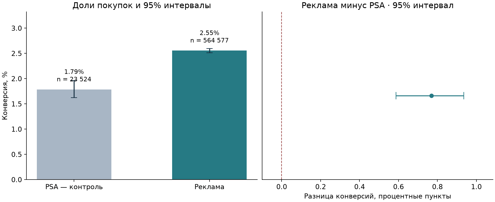
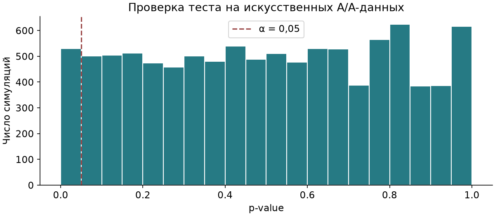

Учебный проект · Python · PostgreSQL · статистика
Сравнение долей покупок в группах рекламы и нейтральных объявлений PSA.
+0.77 п.п.
Наблюдаемая разница конверсии; 95% интервал 0.59–0.94 п.п.
| Группа | Пользователи | Покупки | Конверсия |
|---|---|---|---|
| psa | 23,524 | 420 | 1.79% |
| ad | 564,577 | 14,423 | 2.55% |

Нужно оценить стоимость контакта и маржинальность, затем согласовать дизайн следующего теста.
В наборе нет расходов и выручки; дни и часы показов используются описательно.

Искусственные A/A-данные.